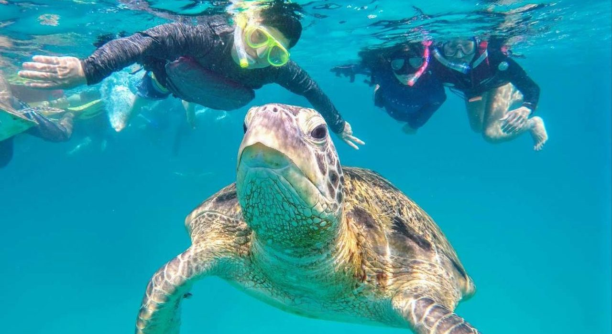
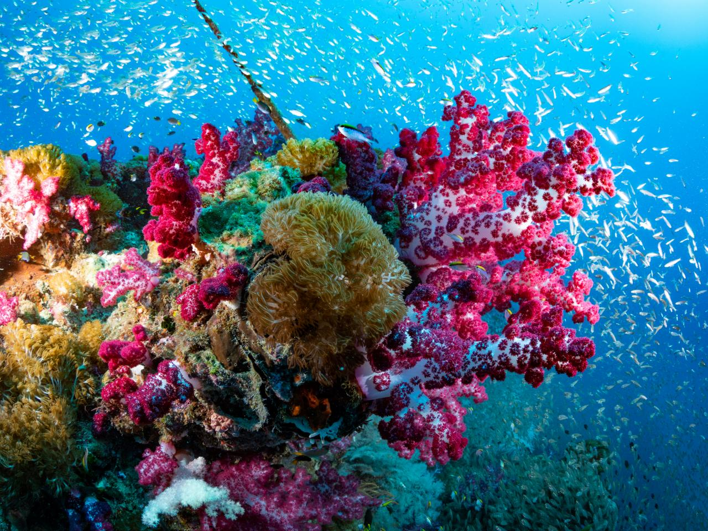
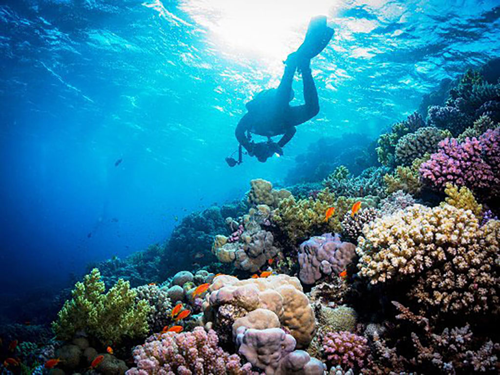
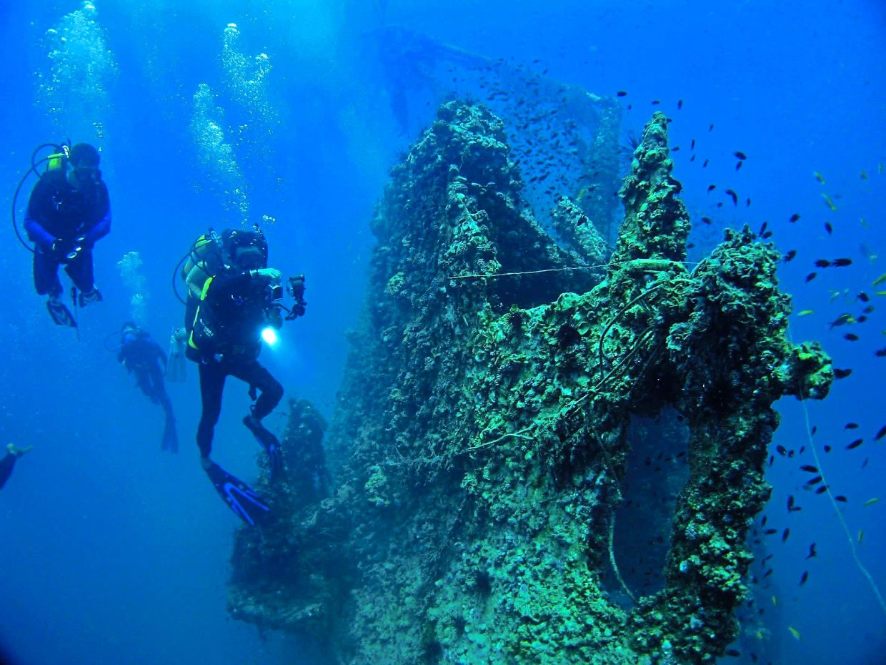
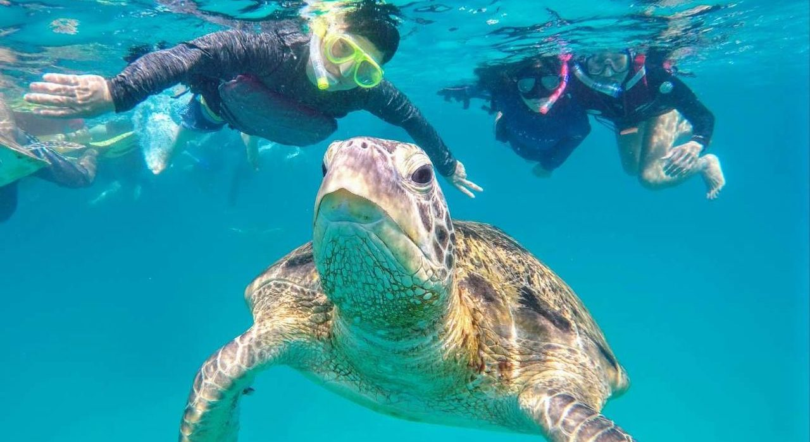
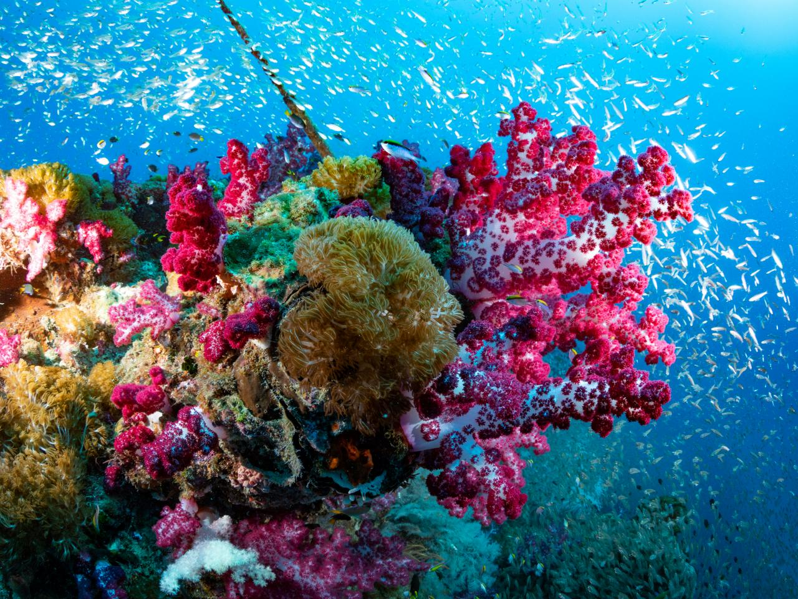
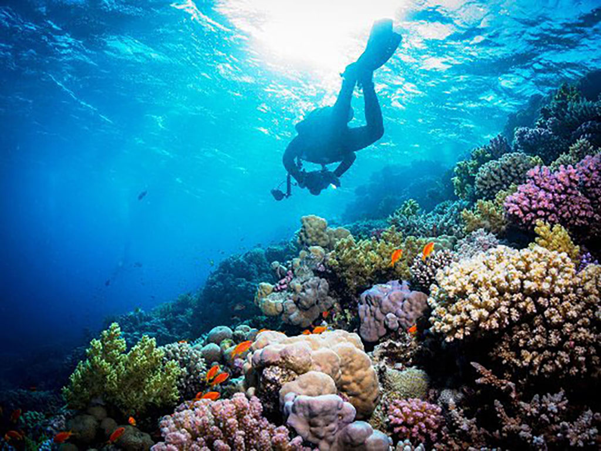
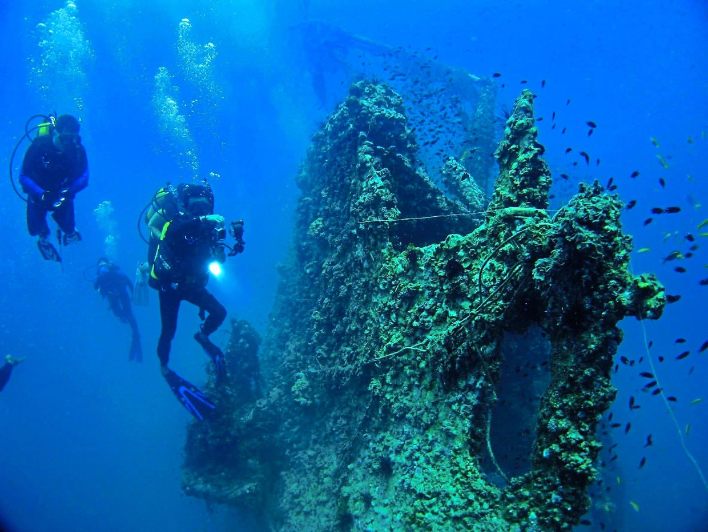

Discover the serenity and adventure that awaits you in Malaysia's islands and beaches. From pristine shores to breathtaking underwater worlds, every moment promises an unforgettable experience.
Port Dickson
Port Dickson is a popular beach destination in Malaysia known for its sandy shores, family-friendly attractions, and water sports. It's perfect for a relaxing seaside escape and enjoying coastal activities.
Pulau Langkawi
Pulau Langkawi is a tropical gem boasting stunning landscapes, from lush rainforests to majestic waterfalls, and offering a blend of luxury resorts and cultural heritage.
Pulau Tioman
Pulau Tioman is a tranquil island getaway with emerald waters, lush jungles, and a rich marine life, making it a haven for nature lovers and adventure seekers.
 







Pulau Redang
A pristine paradise known for its crystal-clear waters, vibrant coral reefs, and serene beaches, perfect for snorkeling and diving enthusiasts.
Pulau Sipadan
Pulau Sipadan is a top diving spot in Malaysia, famous for its clear waters, diverse marine life, and vibrant coral reefs. It's ideal for underwater adventures and natural beauty.
Pulau Mabul
Divers from around the globe visit Mabul year-round to explore its vibrant reefs, pelagics, and colorful fish, while also seeking out the diverse and often rare macro marine life that thrives in its waters.